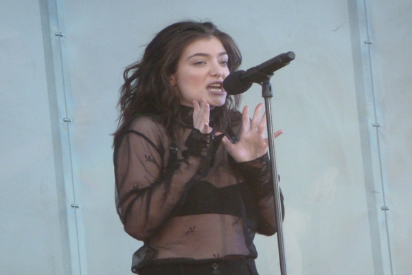
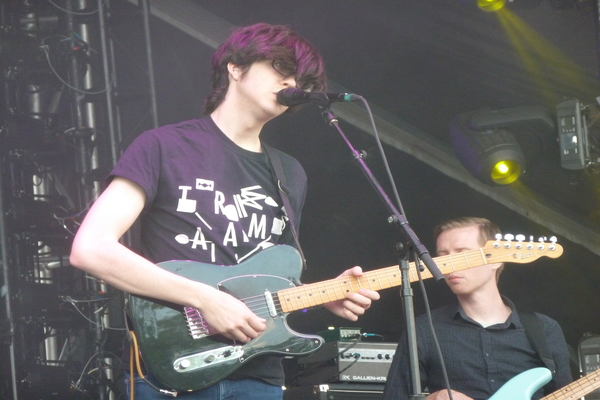
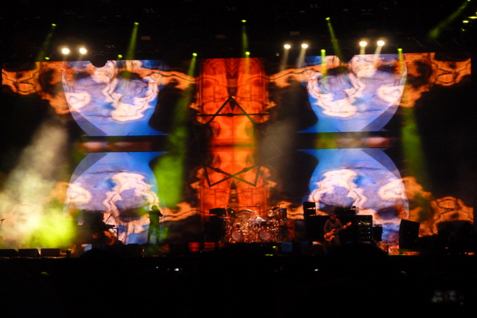

Returning to Randall's Island: The Best of Governors Ball 2017
By Joe Marvilli

Now six years into its tenure, Governors Ball is a well-oiled machine and is one of the top fests in the country. For New Yorkers, it's a must-attend event. But it still takes risks and offers surprises that few other showcases pull off. Giving Chance the Rapper a headlining shot? Sure. Having Tool close out three days focused more on pop, indie rock and rap? Why not? But getting to see acts like Lorde, Childish Gambino, Wu-Tang Clan and Air all within 72 hours? That's an experience that no other festival offered this year.
New York City in early June is a dangerous time for outdoor event when it comes to weather. In 2016, thunderstorms made a soggy Governors Ball on Saturday night and canceled Sunday. Last weekend, with rain in the forecast, there were concerns about a repeat washout. But the weather gods smiled upon Randall's Island, keeping rain to a minimum.
Okay, that's one problem out of the way. But how was the actual festival?
As with all major events like this, there are a few flaws. Transportation to and from the island was spotty and limited. There were very long lines at the end of each day to either walk over the bridge or take the festival ferry. Some more shuttle buses going to a few other neighborhoods would be a big help for this hard-to-reach spot. There were a few sound issues as well, especially by the Gov Ball NYC stage and Bacardi Tent.
That being said, the good far outweighed the bad, making the weekend an excellent and varied music experience. These 10 artists helped make Governors Ball 2017 a roaring return to form.
Friday, June 2
Judah & The Lion
Early slots at a music festival are some of the toughest for an artist, particularly on the first day. But Judah & The Lion handled it with style, weirdness and fun. Few groups can go from a guitar-and-banjo rocker into a cover of T-Pain's Booty Wurk. But it worked! The band dropped in a wild cover of Mr. Brightside too, earning the first singalong of the festival. Their originals stood up well too, especially the anthemic Take It All Back. Even the uninitiated were chanting along to the title by its end.
Charles Bradley & His Extraordinaires
What a revelatory, inspirational set. Just seeing Charles Bradley back onstage after beating cancer was thrilling enough. The fact that he's lost none of his style, stride or stunning voice made his performance a sublime affair. After a rousing introduction, Bradley came out in his trademark red suit and gave us his best James Brown moves. Whether it's his soulful screams in How Long or the smooth spirit behind Ain't It A Sin, his voice was endlessly impressive. He didn't hog the spotlight though, giving his flawless band a couple of songs to play through. He ended the show beautifully, asking everyone to love each other, take care of the planet and let the roses in their hearts blossom. As the Extraordinaires wrapped up, Bradley grabbed a bouquet and threw roses into the crowd.
Bleachers
Jack Antonoff wants to be Born in the U.S.A. era Bruce Springsteen. With his band Bleachers, on the back of their new sophomore record Gone Now, he's made a good case for himself. It's as if The Boss recorded that 1985 landmark album today, updating its mixture of pop and mainstream rock to the 2010s instead. I Wanna Get Better, Don't Take The Money and Rollercoaster had a kinetic energy that matched Antonoff's seemingly-limitless enthusiasm. It's the type of joyful music that elevates everyone who hears it. The band even threw in a sweet cover of Go Your Own Way. Give Bleachers another album or two and they'll be headliners in their own right.

Lorde
Lorde's time as a live performer has come. Her set was the place to be for the entire weekend and many festivalgoers agreed. We were rewarded with a show that flipped between Pure Herione and the upcoming Melodrama. As she sang and danced like only Lorde does, a mini-play took place in an elevated, transparent box above the stage. Lorde joined the production as well, singing Sober alone in the box as it tilted drunkenly from side-to-side.
As an extra treat, Jack Antonoff joined her on piano for Liability and an excellent, low-key cover of Hang With Me by Robyn. She premiered the recently-released Perfect Places, another highlight. While Royals was a giant singalong, the best reaction of the night came with the closing performance of Green Light. Before starting it, she asked the mass of revelers to take whatever's bothering them, that frustrating energy, and give to her as they danced. And everyone did. It was a euphoric end to her set.
Saturday, June 3

Car Seat Headrest
After a day of excellent, mostly-polished sets, I was happy but also ready to rock out a bit more. Car Seat Headrest was exactly what I needed. The four-piece took to the stage with no ceremony, grabbed their instruments and proceeded to melt my face off with a blistering performance. Fill in the Blank was the type of song that runs through everyone like an electric current. By the time they got to the wavy bursts of Drunk Drivers/Killer Whales, half the audience was headbanging with the other half holding up crowdsurfers. The energy was relentless.
Wu-Tang Clan
What else can you say about Wu-Tang Clan? They're legends. It's a distinction the collective has earned time and again. Even as they've gotten older, the group has not lost any of its fire. Through songs like Bring da Ruckus, C.R.E.A.M. and Triumph, masterful flows was on display. Then there were the special guests. For Da Rockwilder, Method Man, teasing the crowd, said that Redman couldn't make it, only for the rapper to join him as the track started up. On Shimmy Shimmy Ya, Young Dirty Bastard came out to pay tribute to his father. To wrap up their set, Wu-Tang Clan went back to their first single, Protect Ya Neck. And if their ability didn't floor the audience yet, they rapped it a cappella. That's how you finish a show.
Childish Gambino
Out of all the acts this year, Childish Gambino was the biggest get for Govenors Ball. Being a bit busy with (deep breath) Atlanta, Spider-Man, Han Solo and The Lion King remake, he doesn't have much time for touring. Too bad there aren't more hours in the day for concerts, because his Saturday night performance was magnetic. Before the set started, I wondered how the psychedelic funk Awaken, My Love! would work alongside his earlier rap albums. The answer is surprisingly well! He effortlessly moved from tracks like 3005 to Stand Tall, with the help of his excellent band. It's rare that you have such a prodigious rap talent who also knows how to unleash a furious soul scream. But both sides of Childish Gambino were met with dancing and revelry from the audience. Before he left, Glover said he would see us again for the last Childish Gambino album. If that's true, it will be a shame. But whenever that day comes, we'll be there to move to his rhythms and rhymes.
Sunday, June 4
Franz Ferdinand
Is there any band in the world having as much fun as Franz Ferdinand? I doubt it! From the opening zigzag riff of Jacqueline, the audience and band were bouncing along to every beat. Frontman Alex Kapranos remains the super-active centerpiece, doing jumping splits, frantically strumming his guitar and getting the audience involved. As expected, we all went nuts for No You Girls, Michael and Take Me Out. But new tracks like the spacey New Wave of Always Ascending and the swaggering Paper Cages got great reactions too. Here's hoping there's a new album on the horizon. It's only been a few days since the show, but I can't wait for Franz Ferdinand to return.
AIR
The other significant catch for Governors Ball was AIR, on their first U.S. tour in seven years. Playing inside the Bacardi tent, the duo (enhanced by two touring members) played music that washed over everyone. It was a chance to slow down, meditate and bask in the mixture of organic and electronic instruments. Starting with the light touch of Venus, AIR designed their setlist to slowly spiral outwards, all-engulfing. As time moved on, their show got more upbeat, maxing out at the close with the pulse of three songs off Moon Safari. Even the occasional sound-bleeding from the nearby Logic performance couldn't detract from the experience.

Tool
Part of what makes Governors Ball great is that even though it's a mainstream festival, the curators do their best to find something for everyone. Tool's headlining set scratched that itch for those who wanted something heavier. Grabbing the band for their first New York City show since 2006 was a risk, given the lack of new music and that their albums aren't available on streaming sites. People unfamiliar with the band had to show up and give them a chance.
But this booking paid off in dividends. While they were relatively static onstage, the shredfests of Schism, Jambi, Third Eye and more worked hand-in-hand with trippy visuals to elevate everyone's heart rate. Very few bands combine industrial fury, prog mastery and political commentary on Tool's level. Outside of the hardcore fans, many people who showed up to see what they were all about, including me. As we walked away, ears ringing and eyeballs fried, we weren't just impressed but ready for more. No better feeling to close a festival on than that.
9 June, 2017 - 03:09 — Joe Marvilli